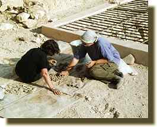
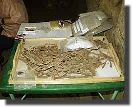
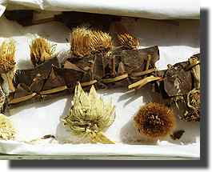
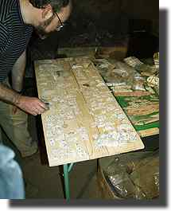

|
|||||
Wednesday 8 DecemberPamela Rose is in overall charge of our pottery, and Alan Clapham, her husband, is an archaeobotanist. They have only a couple of days to be with us. Pamela begins to review with Gillian what we have done with the Senneferi pottery, and to look through the remaining groups. The aim is to get the measure of work needed on this material so we can plan for the future. Pam kindly remarks that this is the most important group of pottery from the private tombs she knows, and that we need to make every effort to ensure that the maximum amount of information is gathered from it. While they do this, I set about doing the initial sorting of the other contexts than the Senneferi burial chamber, as the incompleteness of most of the vessels indicates that there must be other material around. We spot many fragments, and also find a few fragments of one of the canopic lids pictured last year. We have parts of various funerary garlands placed on the mummies of the Third Intermediate Period, and Alan sets to work to identify the species used in the garland, and note details of construction etc. These garlands are very fragile and rarely appear in publications--with the opportunity of a specialist to look at it, it seems foolish to miss out. In the back of the tomb, John has begun to lay out the coffin fragments of the 25th dynasty. More on this tomorrow... The day was long and tiring, as Abdel-Rahman allowed us to work longer so that Pamela and Alan could get the maximum amount of work done. We were very grateful, but all glad to get home. |
|||||
Thursday 9 DecemberRamadan has started today. At TT99, everything continues as before. Pam and Gillian by the end of the day have looked at all the main groups of material in the last two chambers of the tomb. Most of the fabrics we identified as oasis pottery are in fact more common marl clays, but we do have parts of at least one vessel from this material. Several vessels have the remains of hieratic labels which describe their contents. I have been sorting the sherds from the tomb corridor. The fact that we find there sherds which join vessels from the burial chamber show the extent to which burials such as this one were smashed up. When how and why are important questions which it would be interesting to examine formally some time. Alan finishes his work on the garland. He has provisionally identified a number of the plants in its construction, and also some fragments of flowers found with it. The garland is made of Mimusops sp. leaves folded and stitched with palm leaf strips; the three species of flowers belong to the thistle family. The smaller ones within the garland are most likely Ceruana pratensis (Arabic 'Garawan') which are yellow and found frequently in similar contexts. 
John's work on the coffins is progressing. He has taken the group of fragments which pertain to the 25th and 26th dynasties and is sorting them into various coffins. This photo shows him working with fragments bearing texts of the interior of coffins, perhaps those of Wedjahor and Horenpe. Bridget Leach, the BM's papyrus conservator arrives today and gets set up for starting work on the fragments of Book of the Dead on Saturday. |
|||||
Friday 10 DecemberDay off. John goes to Karnak, and the rest of us visit the newly opened tombs at Dra Abul Naga and then go on to visit a friend who has a shop at the Colossi of Memnon. I then walked back through the immense site of the Amenhotep III mortuary temple; in addition to the tourist photo below, here are a few shots of the site as it is at present. This temple was once the largest in Thebes, and contained probably in excess of 1,000 statues.
|
|||||
|
All text and images © Nigel Strudwick 1999
|
|||||
 The Dig Diary 1999--Part 3
The Dig Diary 1999--Part 3© Nigel Strudwick 1997-2016